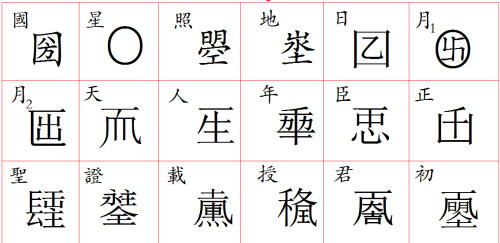

| 史籍 > 新唐书 | 上页 下页 |
| 后妃传上(2) |
|
|
|
高宗则天顺圣皇后武氏，并州文水人。父士彟，见《外戚传》。文德皇后崩，久之，太宗闻士彟女美，召为才人，方十四。母杨，恸泣与诀，后独自如，曰：“见天子庸知非福，何儿女悲乎？”母韪其意，止泣。既见帝，赐号武媚。及帝崩，与嫔御皆为比丘尼。高宗为太子时，入侍，悦之。王后后久无子，萧淑妃方幸，后阴不悦。它日，帝过佛庐，才人见且泣，帝感动。后廉知状，引内后宫，以挠妃宠。 才人有权数，诡变不穷。始，下辞降体事后，后喜，数誉於帝，故进为昭仪。一旦顾幸在萧后，寝与后不协。后性简重，不曲事上下，而母柳见内人尚宫无浮礼，故昭仪伺后所薄，必款结之，得赐予，尽以分遗。由是后及妃所为必得，得辄以闻，然未有以中也。昭仪生女，后就顾弄，去，昭仪潜毙儿衾下，伺帝至，阳为欢言，发衾视儿，死矣。又惊问左右，皆曰：“后适来。”昭仪即悲涕，帝不能察，怒曰：“后杀吾女，往与妃相谗媢，今又尔邪！”由是昭仪得入其訾，后无以自解，而帝愈信爱，始有废后意。久之，欲进号“宸妃”，侍中韩瑗、中书令来济言：“妃嫔有数，今别立号，不可。”昭仪乃诬后与母厌胜，帝挟前憾，实其言，将遂废之。长孙无忌、褚遂良、韩瑗及济濒死固争，帝犹豫；而中书舍人李义府、卫尉卿许敬宗素险侧，狙势即表请昭仪为后，帝意决，下诏废后。诏李勣、于志宁奉玺绶进昭仪为皇后，命群臣及四夷酋长朝后肃义门，内外命妇入谒。朝皇后自此始。 后见宗庙，再赠士彟至司徒，爵周国公，谥忠孝，配食高祖庙。母杨，再封代国夫人，家食魏千户。后乃制《外戚诫》献诸朝，解释讥譟。于是逐无忌、遂良，踵死徙，宠煽赫然。后城宇深，痛柔屈不耻，以就大事，帝谓能奉己，故扳公议立之。已得志，即盗威福，施施无惮避，帝亦儒昏，举能钳勒，使不得专，久稍不平。麟德初，后召方士郭行真入禁中为蛊祝，宦人王伏胜发之，帝怒，因是召西台侍郎上官仪，仪指言后专恣，失海内望，不可承宗庙，与帝意合，乃趣使草诏废之。左右驰告，后遽从帝自诉，帝羞缩，待之如初，犹意其恚，且曰：“是皆上官仪教我！”后讽许敬宗构仪，杀之。 初，元舅大臣怫旨，不阅岁屠覆，道路目语，及仪见诛，则政妇房帷，天子拱手矣。群臣朝、四方奏章，皆曰“二圣”。每视朝，殿中垂帘，帝与后偶坐，生杀赏罚惟所命。当其忍断，虽甚爱，不少隐也。帝晚益病风不支，天下事一付后。后乃更为太平文治事，大集诸儒内禁殿，撰定《列女传》、《臣轨》、《百僚新诫》、《乐书》等，大氐千馀篇。因令学士密裁可奏议，分宰相权。 始，士彟娶相里氏，生子元庆、元爽。又娶杨氏，生三女：伯嫁贺兰越石，蚤寡，封韩国夫人；仲即后；季嫁郭孝慎，前死。杨以后故，宠日盛，徙封荣国。始，兄子惟良、怀运与元庆等遇杨及后礼薄，后衔不置。及是，元庆为宗正少卿，元爽少府少监，惟良司卫少卿，怀运淄州刺史。它日，夫人置酒，酣，谓惟良曰：“若等记畴日事乎？今谓何？”对曰：“幸以功臣子位朝廷，晚缘戚属进，忧而不荣也。”夫人怒，讽后伪为退让，请惟良等外迁，无示天下私。繇是，惟良为始州刺史；元庆，龙州；元爽，濠州，俄坐事死振州。元庆至州，忧死。韩国出入禁中，一女国姝，帝皆宠之。韩国卒，女封魏国夫人，欲以备嫔职，难於后，未决。后内忌甚，会封泰山，惟良、怀运以岳牧来集，从还京师，后毒杀魏国，归罪惟良等，尽杀之，氏曰“蝮”，以韩国子敏之奉士彟祀。初，魏国卒，敏之入吊，帝为恸，敏之哭不对。后曰：“儿疑我！”恶之。俄贬死。杨氏徙酂、卫二国，咸亨元年卒，追封鲁国，谥忠烈，诏文武九品以上及五等亲与外命妇赴吊，以王礼葬咸阳，给班剑、葆杖、鼓吹。时天下旱，后伪表求避位，不许。俄又赠士彟太尉兼太子太师、太原郡王，鲁国忠烈夫人为妃。 上元元年，进号天后，建言十二事：一、劝农桑，薄赋徭；二、给复三辅地；三、息兵，以道德化天下；四、南北中尚禁浮巧；五、省功费力役；六、广言路；七、杜谗口；八、王公以降皆习《老子》；九、父在为母服齐衰三年；十、上元前勋官已给告身者无追核；十一、京官八品以上益禀入；十二、百官任事久，材高位下者得进阶申滞。帝皆下诏略施行之。 萧妃女义阳、宣城公主幽掖廷，几四十不嫁，太子弘言于帝，后怒，酖杀弘。帝将下诏逊位於后，宰相郝处俊固谏，乃止。后欲外示宽裕，劫人心使归已，即奏言：“今群臣纳半俸、百姓计口钱以赡边兵，恐四方妄商虚实，请一罢之。”诏可。 仪凤三年，群臣、蕃夷长朝后于光顺门。即并州建太原郡王庙。帝头眩不能视，侍医张文仲、秦鸣鹤曰：“风上逆，砭头血可愈。”后内幸帝殆，得自专，怒曰：“是可斩，帝体宁刺血处邪？”医顿首请命。帝曰：“医议疾，乌可罪？且吾眩不可堪，听为之！”医一再刺，帝曰：“吾目明矣！”言未毕，后帘中再拜谢，曰：“天赐我师！”身负缯宝以赐。 帝崩，中宗即位，天后称皇太后，遗诏军国大务听参决。嗣圣元年，太后废帝为庐陵王，自临朝，以睿宗即帝位。后坐武成殿，帝率群臣上号册。越三日，太后临轩，命礼部尚书摄太尉武承嗣、太常卿摄司空王德真册嗣皇帝。自是太后常御紫宸殿，施惨紫帐临朝。追赠五世祖后魏散骑常侍克己为鲁国公，妣裴即其国为夫人；高祖齐殷州司马居常为太尉、北平郡王，妣刘为王妃；曾祖永昌王谘议参军、赠齐州刺史俭为太尉、金城郡王，妣宋为王妃；祖隋东郡丞、赠并州刺史、大都督华为太尉、太原郡王，妣赵为王妃。皆置园邑，户五十。考为太师、魏王，加实户满五千，妣为王妃，王园邑守户百。时睿宗虽立，实囚之，而诸武擅命。又谥鲁国公曰靖，裴为靖夫人；北平郡王曰恭肃，金城郡王曰义康，太原郡王曰安成，妃从夫谥。太后遣册武成殿使者告五世庙室。 于是柳州司马李敬业、括苍令唐之奇、临海丞骆宾王疾太后胁逐天子，不胜愤，乃募兵杀扬州大都督府长史陈敬之，据州欲迎庐陵王，众至十万。楚州司马李崇福连和。盱眙人刘行举婴城不肯从，敬业攻之，不克。太后拜行举游击将军，擢其弟行实楚州刺史。敬业南度江取润州，杀刺史李思文，曲阿令尹元贞拒战死。太后诏左玉钤卫大将军李孝逸为扬州道行军大总管，率兵三十万讨之，战于高邮，前锋左豹韬果毅成三朗为唐之奇所杀。又以左鹰扬卫大将军黑齿常之为江南道行军大总管，并力。敬业兴三月败，传首东都，三州平。 始，武承嗣请太后立七庙，中书令裴炎沮止，及敬业之兴，下炎狱，杀之，并杀左威卫大将军程务挺。太后方怫恚，一日，召群臣廷让曰：“朕於天下无负，若等知之乎？”群臣唯唯。太后曰：“朕辅先帝逾三十年，忧劳天下。爵位富贵，朕所与也；天下安佚，朕所养也。先帝弃群臣，以社稷为托，朕不敢爱身，而知爱人。今为戎首者皆将相，何见负之遽？且受遗老臣伉扈难制有若裴炎乎？世将种能合亡命若徐敬业乎？宿将善战若程务挺乎？彼皆人豪，不利於朕，朕能戮之。公等才有过彼，蚤为之。不然，谨以事朕，无诒天下笑。”群臣顿首，不敢仰视，曰：“惟陛下命。” 久之，下诏阳若复辟者。睿宗揣非情，固请临朝，制可。乃冶铜匦为一室，署东曰“延恩”，受干赏自言；南曰“招谏”，受时政失得；西曰“申冤”，受抑枉所欲言；北曰“通玄”，受谶步秘策。诏中书门下一官典领。 太后不惜爵位，以笼四方豪桀自为助，虽妄男子，言有所合，辄不次官之，至不称职，寻亦废诛不少纵，务取实材真贤。又畏天下有谋反逆者，诏许上变，在所给轻传，供五品食，送京师，即日召见，厚饵爵赏歆动之。凡言变，吏不得何诘，虽耘夫荛子必亲延见，禀之客馆。敢稽若不送者，以所告罪之。故上变者遍天下，人人屏息，无敢议。 新丰有山因震突出，太后以为美祥，赦其县，更名庆山。荆人俞文俊上言：“人不和，疣赘生；地不和，堆阜出。今陛下以女主处阳位，山变为灾，非庆也。”太后怒，投岭外。 诏毁乾元殿为明堂，以浮屠薛怀义为使督作。怀义，鄠人，本冯氏，名小宝，伟岸淫毒，佯狂洛阳市，千金公主嬖之。主上言：“小宝可入侍。”后召与私，悦之。欲掩迹，得通籍出入，使祝发为浮屠，拜白马寺主。诏与太平公主婿薛绍通昭穆，绍父事之。给厩马，中官为驺侍，虽承嗣、三思皆尊事惟谨。至是护作，士数万，巨木率一章千人乃能引。又度明堂后为天堂，鸿丽岩奥次之。堂成，拜左威卫大将军、梁国公。 始作崇先庙于西京，享武氏。承嗣伪款洛水石，导使为帝，遣雍人唐同泰献之，后号为“宝图”，擢同泰游击将军。于是汜人又上瑞石，太后乃郊上帝谢况，自号圣母神皇，作神皇玺，改宝图曰“天授圣图”，号洛水曰永昌水，图所曰圣图泉，勒石洛坛左曰“天授圣图之表”，改汜水曰广武。时柄去王室，大臣重将皆挠不得逞，宗室孤外无寄足地。于是，韩王元嘉等谋举兵唱天下，迎还中宗。琅邪王冲、越王贞先发，诸王仓卒无应者，遂败。元嘉与鲁王灵夔等皆自杀，馀悉坐诛，诸王牵连死灭殆尽，子孙虽婴褓亦投岭南。太后身拜洛受图，天子率太子、群臣、蛮夷以次列，大陈珍禽、奇兽、贡物、卤簿坛下，礼成去。 永昌元年，享万象神宫，改服衮冕，裯大圭，执镇圭，睿宗亚献，太子终献。合祭天地，五方帝、百神从，以高祖、太宗、高宗配，引魏王士护从配。班九条，训百官。遂大飨群臣。号士护周忠孝太皇，杨忠孝太后。以文水墓为章德陵，咸阳墓为明义陵。太原安成王为周安成王，金城郡王为魏义康王，北平郡王为赵肃恭王，鲁国公为太原靖王。 载初中，又享万象神宫，以太穆、文德二皇后配皇地祗，引周忠孝太后从配。作曌、◇、埊、◇、囝、○、◇、◇、◇、◇、◇、◇十有二文①。太后自名曌。改诏书为制书。以周、汉为二王后，虞、夏、殷后为三恪，除唐属籍。拜薛怀义辅国大将军，封鄂国公，令与群浮屠作《大云经》，言神皇受命事。春官尚书李思文诡言：“《周书·武成》为篇，辞有‘垂拱天下治’，为受命之符。”后喜，皆班示天下，稍图革命。然畏人心不肯附，乃阴忍鸷害，肆斩杀怖天下。内纵酷吏周兴、来俊臣等数十人为爪吻，有不慊若素疑惮者，必危法中之。宗姓侯王及它骨鲠臣将相骈颈就鈇，血丹狴户，家不能自保。太后操奁具坐重帏，而国命移矣。 【①武周时期所造12字大致如下图↓】  御史傅游艺率关内父老请革命，改帝氏为武。又胁群臣固请，妄言凤集上阳宫，赤雀见朝堂。天子不自安，亦请氏武，示一尊。太后知威柄在己，因大赦天下，改国号周，自称圣神皇帝，旗帜尚赤，以皇帝为皇嗣。立武氏七庙於神都。尊周文王为文皇帝，号始祖，妣姒曰文定皇后；武王为康皇帝，号睿祖，妣姜曰康惠皇后；太原靖王为成皇帝，号严祖，妣曰成庄皇后；赵肃恭王为章敬皇帝，号肃祖，妣曰章敬皇后；魏义康王为昭安皇帝，号烈祖，妣曰昭安皇后；祖周安成王为文穆皇帝，号显祖，妣曰文穆皇后；考忠孝太皇为孝明高皇帝，号太祖，妣曰孝明高皇后。罢唐庙为享德庙，四时祠高祖以下三室，馀废不享。至日，祀上帝万象神宫，以始祖及考妣配，以百神从祀。尽王诸武。诏并州文水县为武兴，比汉丰、沛，百姓世给复。以始祖冢为德陵，睿祖为乔陵，严祖为节陵，肃祖为简陵，烈祖为靖陵，显祖为永陵，章德陵为昊陵，明义陵为顺陵。 太皇虽春秋高，善自涂泽，虽左右不悟其衰。俄而二齿生，下诏改元为长寿。明年，享神宫，自制大乐，舞工用九百人，以武承嗣为亚献，三思为终献。帝之为皇嗣，公卿往往见之，会尚方监裴匪躬、左卫大将军阿史那元庆、白涧府果毅薛大信、监门卫大将军范云仙潜谒帝，皆腰斩都市，自是公卿不复上谒。 有上封事言岭南流人谋反者，太后遣摄右台监察御史万国俊就按，得实即论决。国俊至广州，尽召流人，矫诏赐自尽，皆号哭不服，国俊驱之水曲，使不得逃，一日戮三百馀人。乃诬奏流人怨望，请悉除之。于是太后遣右卫翊府兵曹参军刘光业、司刑评事王德寿、苑南面监丞鲍思恭、尚辇直长王大贞、右武卫兵曹参军屈贞筠，皆摄监察御史，分往剑南、黔中、安南等六道讯鞫，而擢国俊左台侍御史。光业等亦希功於上，惟恐杀人之少。光业杀者九百人，德寿杀七百人，其馀亦不减五百人。太后久乃知其冤，诏六道使所杀者还其家。国俊等亦相踵而死，皆见有物为厉云。 太后又自加号金轮圣神皇帝，置七宝於廷：曰金轮宝，曰白象宝，曰女宝，曰马宝，曰珠宝，曰主兵臣宝，曰主藏臣宝，率大朝会则陈之。又尊其显祖为立极文穆皇帝，太祖为无上孝明皇帝。延载二年，武三思率蕃夷诸酋及耆老请作天枢，纪太后功德，以黜唐兴周，制可。使纳言姚璹护作。乃大裒铜铁合冶之，署曰“大周万国颂德天枢”，置端门外。其制若柱，度高一百五尺，八面，面别五尺，冶铁象山为之趾，负以铜龙，石镵怪兽环之。柱颠为云盖，出大珠，高丈，围三之。作四蛟，度丈二尺，以承珠。其趾山周百七十尺，度二丈。无虑用铜铁二百万斤。乃悉镂群臣、蕃酋名氏其上。 薛怀义宠稍衰，而御医沈南璆进，怀义大望，因火明堂，太后羞之，掩不发。怀义愈很恣怏怏。乃密诏太平公主择健妇缚之殿中，命建昌王武攸宁、将作大匠宗晋卿率壮士击杀之，以畚车载尸还白马寺。怀义负幸昵，气盖一时，出百官上，其徒多犯法。御史冯思勖劾其奸，怀义怒，遇诸道，命左右欧之，几死，弗敢言。默啜犯塞，拜新平、伐逆、朔方道大总管，提十八将军兵击胡，宰相李昭德、苏味道至为之长史、司马。后厌入禁中，阴募力少年千人为浮屠，有逆谋。侍御史周矩劾状请治验，太后曰：“第出，朕将使诣狱。”矩坐台，少选，怀义怒马造廷，直往坐大榻上，矩召吏受辞，怀义即乘马去。矩以闻，太后曰：“是道人素狂，不足治，力少年听穷劾。”矩悉投放丑裔。怀义构矩，俄免官。 太后祀天南郊，以文王、武王、士彟与唐高祖并配。太后加号天册金轮圣神皇帝。遂封嵩山，禅少室，册山之神为帝，配为后。封坛南有大槲，赦日置鸡其杪，赐号“金鸡树”。自制《升中述志》，刻石示后。改明堂为通天宫，铸九州鼎，各位其方，列廷中。又敛天下黄金作大仪钟，不克。久之，以崇先庙为崇尊庙，礼视太庙，旋复崇尊庙为太庙。 自怀义死，张易之、昌宗得幸，乃置控鹤府，有监，有丞及主簿、录事等，监三品，以易之为之。太后自见诸武王非天下意，前此中宗自房州还，复为皇太子，恐百岁后为唐宗室躏藉无死所，即引诸武及相王、太平公主誓明堂，告天地，为铁券使藏史馆。改昊陵署为攀龙台。久视初，以控鹤监为天骥府，又改奉宸府，罢监为令，以左右控鹤为奉宸大夫，易之复为令。 神龙元年，太后有疾，久不平，居迎仙院。宰相张柬之与崔玄暐等建策，请中宗以兵入诛易之、昌宗，于是羽林将军李多祚等帅兵自玄武门入，斩二张於院左。太后闻变而起，桓彦范进请传位，太后返卧，不复语。中宗于是复即位。徙太后上阳宫，帝率百官诣观风殿问起居，后率十日一诣宫，俄朝朔、望。废奉宸府官，选东都武氏庙於崇尊庙，更号崇恩，复唐宗庙。诸武王者咸降爵。是岁，后崩，年八十一。遗制称则天大圣皇太后，去帝号。谥曰则天大圣后，祔乾陵。 会武三思蒸韦庶人，复用事。于是大旱，祈陵辄雨。三思訹帝诏崇恩庙祠如太庙，斋郎用五品子。博士杨孚言：“太庙诸郎取七品子，今崇恩取五品，不可。”帝曰：“太庙如崇恩可乎？”孚曰：“崇恩太庙之私，以臣准君则僣，以君准臣则惑。”乃止。及韦、武党诛，诏则天大圣皇后复号天后，废崇恩庙及陵。景云元年，号大圣天后。太平公主奸政，请复二陵官，又尊后曰天后圣帝，俄号圣后。太平诛，诏黜周孝明皇帝号，复为太原郡王，后为妃，罢昊、顺等陵。开元四年，追号则天皇后。太常卿姜晈建言：“则天皇后配高宗庙，主题天后圣帝，非是，请易题为则天皇后武氏。”制可。 |
| 上一页 回目录 回首页 下一页 |